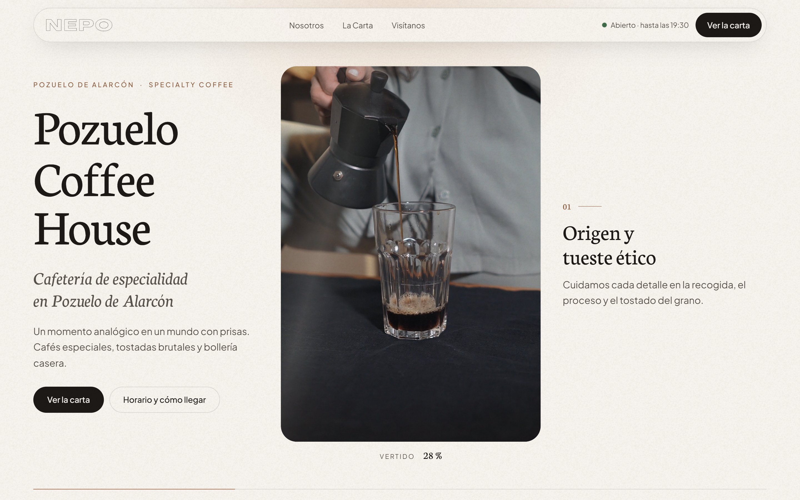
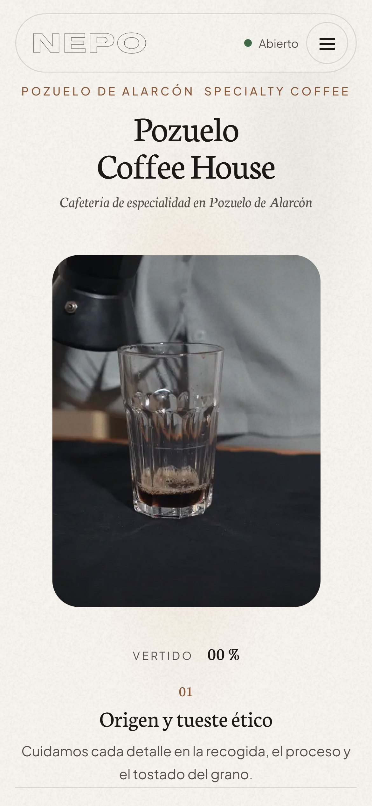
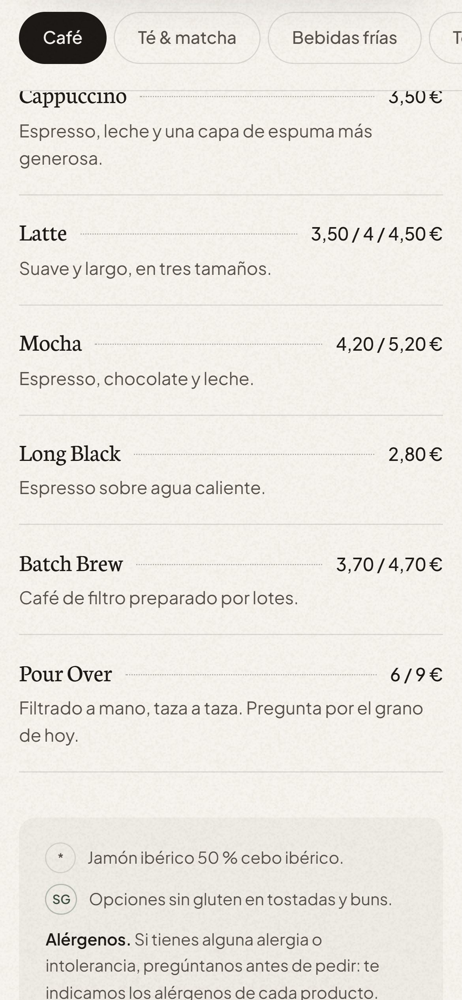
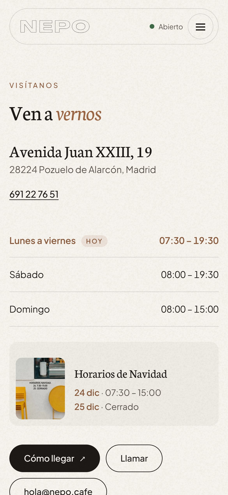

Vuestra web nueva y el día a día de NEPO, contado cada semana
Os traemos la web ya hecha, como regalo, y una propuesta para llevar vuestras redes sociales cada mes, para que lo que pasa en la barra se vea fuera.
Preparado por
nombre / equipo
Contacto
teléfono · email
Fecha
24 de noviembre de 2026
NEPOEn una página
La propuesta
Lo que hacéis en la barra merece verse fuera
01
Web nueva, de regalo
Hecha a medida para NEPO, con vuestras fotos y vuestra carta. Está terminada: la podéis ver hoy.
02
Redes cada mes
Fotos, vídeos, publicaciones y ficha de Google. Nosotros venimos, grabamos, publicamos y os contamos cómo va.
03
Sin ataduras largas
Tres meses para ver resultados y, a partir de ahí, mes a mes. Si no os convence, lo dejamos.
Lo que hemos visto
✓ Una marca con mucho que contar
Café de especialidad, pour over, brioche hojaldrado hecho en casa, tostadas de masa madre y un Solete de la Guía Repsol 2023.
✓ Una estética que ya es vuestra
Fachada blanca, sillas amarillas, tazas de colores, latte art. Las fotos que habéis publicado tienen calidad: hay material y hay estilo.
✕ Redes con poca constancia
En los últimos años las publicaciones en @nepo.cafe han sido muy espaciadas. Quien os descubre en Instagram no ve la carta nueva, los horarios ni lo que pasa hoy en la barra.
✕ La carta, solo en PDF
En el móvil un PDF se lee mal y Google apenas lo entiende. Cuando alguien busca «tostadas» o «café de especialidad» en Pozuelo, una carta en la web cuenta mucho más.
Propuesta para NEPO Café2
NEPO01 · La web
Nuestro regalo
Una web a la altura de vuestro café
Diseñada solo para NEPO: el crema y el espresso de vuestra marca, vuestras fotos y un vídeo de café que se sirve a medida que bajas por la página.

01
Cuatro páginas claras
Inicio, La Carta, Nosotros y Visítanos. Cada una con su dirección propia para que Google la encuentre.
02
La carta completa, con precios
Los 42 productos de la carta en la web, por categorías. Se lee bien en el móvil y Google la entiende.
03
«Abierto ahora», en directo
La web dice si estáis abiertos y hasta qué hora, y avisa sola del horario de Navidad.
04
Cómo llegar en un toque
Dirección, teléfono, mapa y botón «Cómo llegar» a Google Maps desde el móvil.
05
Pensada para Google
Preparada para búsquedas como «cafetería de especialidad en Pozuelo»: textos, horarios y dirección en el formato que Google lee.
06
Legal y sin sorpresas
Aviso de cookies correcto, aviso legal y privacidad. Sin publicidad ni rastreadores.
Propuesta para NEPO Café3
NEPO01 · La web
En el móvil, donde os buscan
Hecha primero para el móvil
Quien busca dónde tomar un café suele hacerlo desde el móvil y con prisa. Todo está a dos toques: la carta, el horario y cómo llegar.

Inicio

La Carta

Visítanos
Medido, no prometido
Resultados de Google Lighthouse, la herramienta de Google para evaluar webs, en la prueba de móvil:
100Accesibilidad
100Buenas prácticas
100SEO
< 2 sCarga en el móvil
Medido antes de publicar. Lo volveremos a medir con la web ya en nepo.cafe.
Propuesta para NEPO Café4
NEPO02 · Redes sociales
Qué contaríamos
Cinco historias que ya tenéis
No hace falta inventar nada: NEPO tiene historias de sobra. Las contamos con constancia, con vuestro tono y con la estética que ya es vuestra.
01
La barra
Extracciones, latte art, pour over, el grano de la semana. El oficio de vuestros baristas en vídeos cortos.
02
La cocina
Tostadas de masa madre, el brioche saliendo del horno, platos nuevos y opciones sin gluten. Lo que da hambre al verlo.
03
El momento NEPO
La primera taza de la mañana, la terraza, los vecinos de siempre. Un momento analógico en un mundo con prisas.
04
Cultura del café
Origen, tueste y cómo se prepara un buen café, explicado fácil en carruseles que la gente guarda y comparte.
05
Comunidad y novedades
El Solete Repsol, el equipo, @nepo_mvmt_studio, horarios especiales y fechas señaladas como Navidad.
Principal
Instagram
Reels, carruseles, fotos y stories. Es donde os buscan y donde se decide si venir.
El que más se olvida
Google
Vuestra ficha de Google Maps: fotos al día, publicaciones, horarios y respuesta a reseñas.
Opcional
TikTok
Los mismos vídeos, adaptados, para llegar a gente que todavía no os conoce.
Propuesta para NEPO Café5
NEPO02 · Redes sociales
Ejemplo · Plan Recomendado
Así sería diciembre
Un mes real, con las fechas que ya tenéis marcadas. Las stories van aparte: varias por semana, con lo que pase ese día.
Lun
Mar
Mié
Jue
Vie
Sáb
Dom
1Grabación Fotos y vídeo en el local para la primera quincena
2Reel El brioche de la casa, del horno a la mesa
3
4Carrusel La carta, plato a plato
5Google Fotos nuevas y horario de diciembre
6
7
8Reel Pour over: un café hecho a mano
9
10Foto La terraza en invierno
11Carrusel Del cafeto a la taza
12
13
14Grabación Segunda sesión: equipo y clientes
15Reel Un día en la barra de NEPO
16
17Carrusel Horarios de Navidad: el 24 hasta las 15:00, el 25 cerrado
18Google Horario especial en Maps
19Foto Mesa de desayuno
20
21Reel Latte art a cámara lenta
22
23Reel Tostadas para los desayunos de fiestas
24Foto Felices fiestas desde la barra
25Cerrado
26
27Reel El año de NEPO en 30 segundos
28
29
30Google Respuesta a reseñas del mes
31
Reel vídeo cortoCarrusel varias fotos o textosFoto publicaciónGoogle ficha de MapsGrabación en el local
Propuesta para NEPO Café6
NEPO03 · Planes
Gestión mensual
Tres planes, una sola cuota
Todos incluyen el cuidado de la web. Elegís el ritmo y lo podéis cambiar cuando queráis.
Básico
Para volver a estar presentes, con constancia.
240 €/ mes
8 publicaciones al mes en Instagram (4 reels)
Stories 2 días por semana
1 sesión de fotos y vídeo al mes en el local
Textos, hashtags y calendario mensual
Mantenimiento de la web: carta, precios y horarios
Resumen mensual de resultados
Recomendado
Recomendado
Para que NEPO sea la cafetería que se ve en Pozuelo.
390 €/ mes
12 publicaciones al mes en Instagram (6 reels)
Stories 3 días por semana
2 sesiones de fotos y vídeo al mes
Ficha de Google: fotos, publicaciones y respuesta a reseñas
Respuesta a comentarios y mensajes (lun–vie)
Mantenimiento de la web incluido
Informe mensual y reunión de 30 min
Completo
Para crecer: llegar a gente nueva cada mes.
590 €/ mes
Todo lo del plan Recomendado
16 publicaciones al mes (8 reels)
TikTok con los vídeos adaptados
4 sesiones de fotos y vídeo al mes
Gestión de anuncios en Instagram (inversión aparte)
Colaboraciones con creadores de la zona
Fotos de la carta para web y Google cada trimestre
Precios sin IVA (21 %). Facturación mensual.
Permanencia de 3 meses; después, mes a mes con 30 días de aviso.
La inversión en anuncios la paga NEPO directamente a Meta, sin comisión nuestra.
Las fotos y vídeos que hagamos son vuestros para usarlos donde queráis.
Sin plan, los cambios puntuales en la web se presupuestan aparte.
Podéis cambiar de plan cualquier mes.
Propuesta para NEPO Café · Precios válidos 30 días7
NEPO04 · Siguientes pasos
Cómo empezamos
En tres semanas, en marcha
Semana 1
Puesta a punto
Repasamos juntos la web, nos dais los accesos y hacemos la primera sesión de fotos y vídeo.
Semana 2
Web publicada
Publicamos la web en nepo.cafe y ponemos al día vuestra ficha de Google.
Semana 3
Primeras publicaciones
Empieza el calendario: os lo enseñamos antes y aprobáis lo que sale.
Mes 1
Primer informe
Qué ha funcionado y qué cambiamos. Así cada mes.
Lo que necesitamos de vosotros
Acceso a Instagram (y a Google, si hay plan Recomendado o Completo)
Una persona de contacto para dudas y aprobaciones
Permiso para usar vuestras fotos en la web y las redes
Fotos del interior, la terraza y el equipo (o las hacemos nosotros)
Razón social y NIF para el aviso legal de la web
Confirmar los alérgenos y la bebida vegetal de la carta